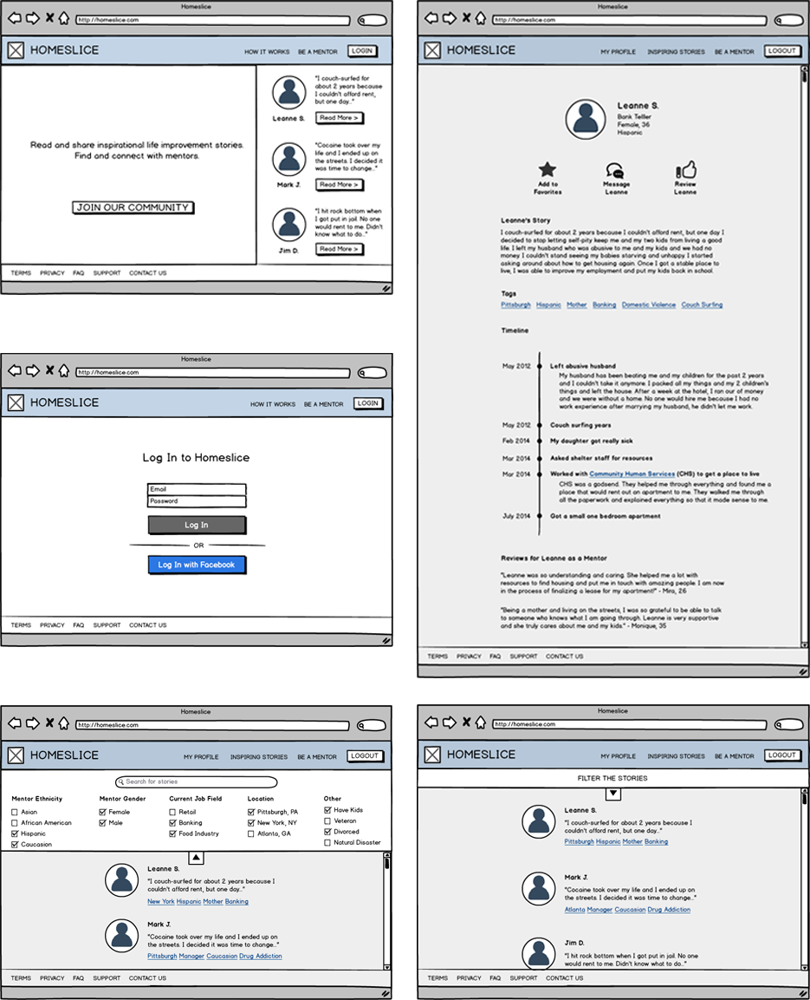

A responsive website entered for the CHI Conference student design competition. Selected as a finalist and invited to South Korea to present. The website allows homeless people that are motivated to change their lives to find mentors who have dealt with similar issues.
As part of the CHI 2015 Conference Student Design Challenge Brief, our team needed to select an underprivileged population and design a technology solution that allows that specific population to connect and benefit from other groups.
We conducted ethnographic studies on 8 individuals at 2 homeless shleters and on the streets over the period of a month. Our user research led us to identifying a key problem faced by the homeless: homeless people that want to improve their lives don't know what steps to take or how to find the appropriate resources.
During our visioning process, we proposed six different solutions and ran proof-of-concept studies on all of them before settling on our final solution: a responsive website that homeless people can access to read stories from mentors that were in similar situations as them. Within the stories are embedded links to resources.
We prototyped our solution in Adobe Illustrator and Azure, and conducted think-aouds with 5 homeless people.
